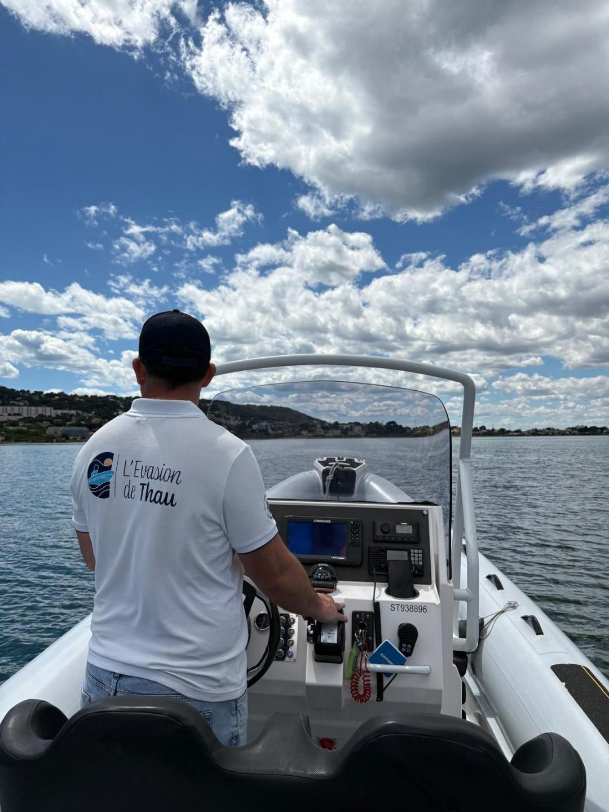
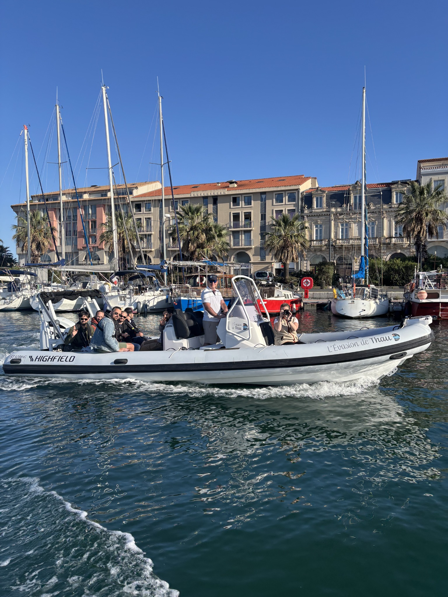
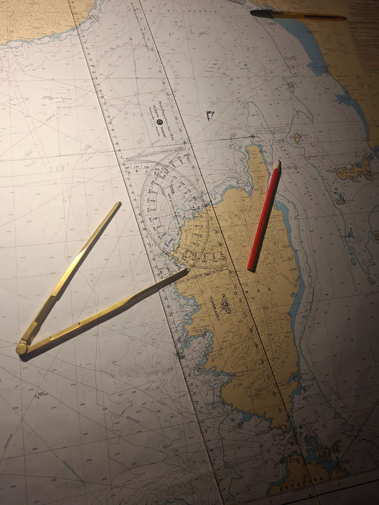

Skipper • Capitaine 200
Prise en charge de votre navire à moteur pour des missions ponctuelles ou régulières. Pilotage, conduite du navire, manœuvres, navigation et gestion courante de la mission.
CAPITAINE 200 • MARIN PROFESSIONNEL
Rémy Barranco — Skipper
Convoyage • Chef de bord NUC • Missions maritimes • Excursions
PRESTATIONS
Des interventions ponctuelles ou régulières, avec une approche rigoureuse de la navigation, de la sécurité et du service à bord.
Prise en charge de votre navire à moteur pour des missions ponctuelles ou régulières. Pilotage, conduite du navire, manœuvres, navigation et gestion courante de la mission.
Convoyage de navires à moteur en tant que skipper, marin ou équipier. Navigation côtière ou hauturière, quarts de jour et de nuit, manœuvres et participation à la vie du bord.
Chef de bord pour activités professionnelles et missions maritimes. Conduite du navire, accueil et sécurité des personnes embarquées, préparation de la navigation et réalisation de la mission.
Expérience de terrain dans les excursions commentées, l'observation des cétacés, le bassin de Thau, les canaux de Sète, la côte agathoise et les sorties événementielles.
TARIFICATION
Décrivez la mission. Le simulateur utilise les informations utiles au classement et au calcul ; lorsqu’un cas ne peut pas être déterminé avec certitude, il vous propose une étude personnalisée.
Si la mission est particulière ou si le simulateur ne permet pas de la déterminer correctement, contactez-moi : nous pouvons étudier votre besoin et réaliser la simulation ensemble.
Me contacter pour une simulationEXPÉRIENCE
Du transport maritime à la conduite de NUC, du convoyage à la croisière, mon parcours m'a permis d'évoluer sur différents types de navires et de missions.

2026
Convoyage en Méditerranée, quarts de jour et de nuit, manœuvres et vie du bord.
2022 — 2026
Quarts passerelle, manœuvres, sûreté, sécurité, entretien, passagers et travail en équipage sur ferries.

Des environnements différents. Une même exigence à bord.
Navigation • Manœuvre • Sécurité • Passagers • Travail en équipage
RECRUTEMENT
Disponible pour de nouvelles opportunités d'embarquement.
Capitaine 200 et marin professionnel, je recherche également des embarquements salariés en CDD, CDI ou contrat saisonnier.
À PROPOS
Après plus de quatorze années en Gendarmerie nationale, j'ai choisi de me reconvertir professionnellement dans le maritime.
Depuis, mon parcours m'a conduit de la navigation de commerce à la plaisance professionnelle, en passant par la croisière, le convoyage et la conduite de navires à passagers.
Aujourd'hui Capitaine 200, j'exerce aussi bien comme marin salarié que comme marin non salarié pour des missions ponctuelles.
Habitué au travail en équipage comme à la responsabilité de chef de bord, j'accorde une importance particulière à la sécurité, à la rigueur et à la qualité de l'expérience proposée aux passagers.

« Préparer. Naviguer. Anticiper. »
RECOMMANDATIONS
Vous avez travaillé avec moi ou fait appel à mes services ? Vous pouvez partager votre expérience.
Les premières recommandations seront prochainement publiées ici.
PRESTATIONS PROFESSIONNELLES
Les prestations facturées par Rémy Barranco – Skipper dans le cadre de son activité indépendante sont exclusivement proposées à des clients agissant pour les besoins de leur activité professionnelle. L’utilisation du simulateur ou l’envoi d’une demande ne constitue ni un devis ni la conclusion d’un contrat.
CONTACT
Besoin d'un skipper, d'un marin pour un convoyage ou d'un chef de bord dans le cadre de votre activité professionnelle ? Vous souhaitez me proposer un embarquement salarié ? Contactez-moi directement.